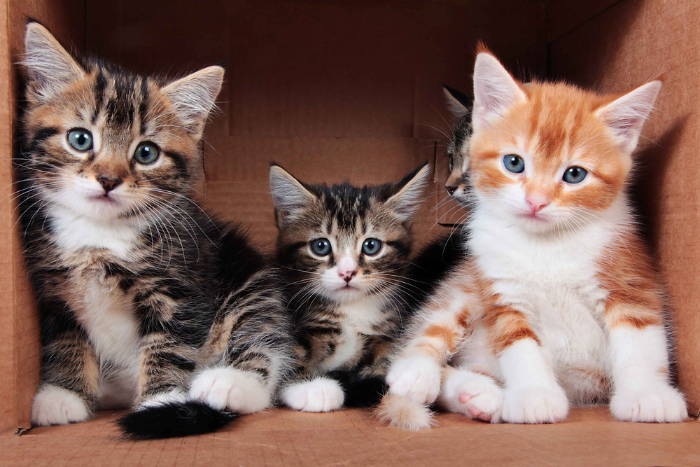
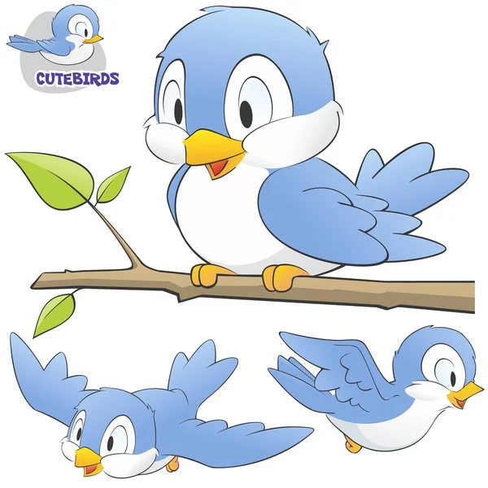

Mis animales favoritos
-
Perritos

-
Gatitos
 -
Pagaritos

Hola que tal, mi nombre es Antony Chi. soy originario de Yucatan, Mexico, tengo 25 años de edad, me gradue en la carrera de INGENIERIA EN SISTEMAS COMPUTACIONALES actualmente soy trabajador de una empresa muy importante a nivel sureste y nivel nacional.
Wikipedia es una enciclopedia libre, políglota y editada de manera colaborativa. Es administrada por la Fundación Wikimedia, una organización sin ánimo de lucro cuya financiación está basada en donaciones
Cuevana es un sitio web argentino dedicado a la distribución de producciones de cine y televisión a través de la web.
Twitch es una plataforma estadounidense perteneciente a la empresa Amazon, Inc., que permite realizar transmisiones en vivo. Esta plataforma tiene como función principal la retransmisión de videojuegos en directo
me gusta escuchar musica, principalmente electronica. me gusta sentir / escuchar las frecuencias graves de las musicas.
me gusta leer, investigar sobre las nuevas tecnologias que sugen y que utilidad tendran.
Me gusta ir al cine a ver peliculas o en casa, soy fanatico de la saga de rapido y furiosos.